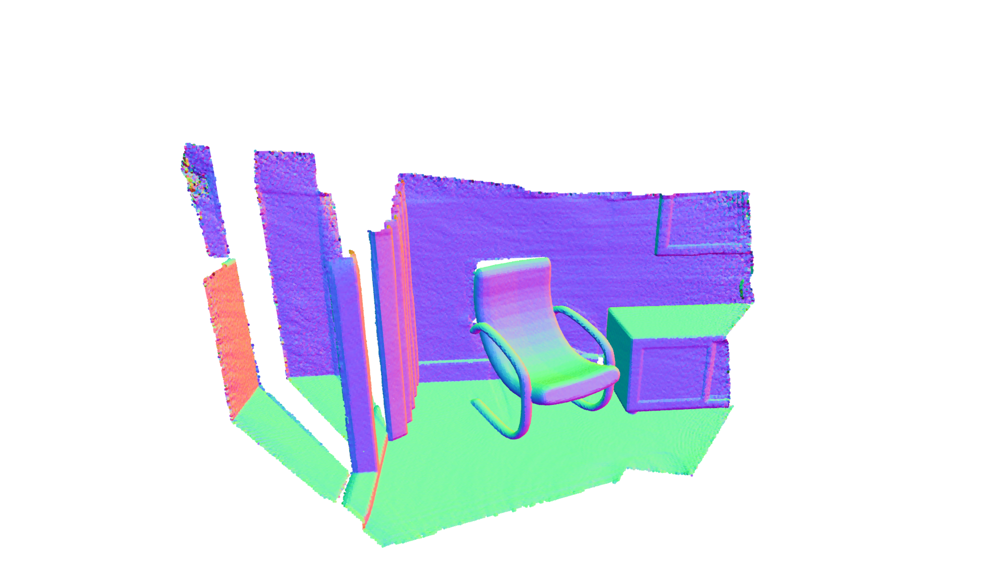
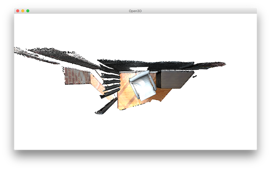
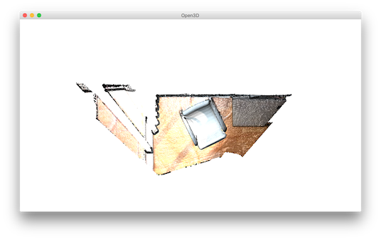
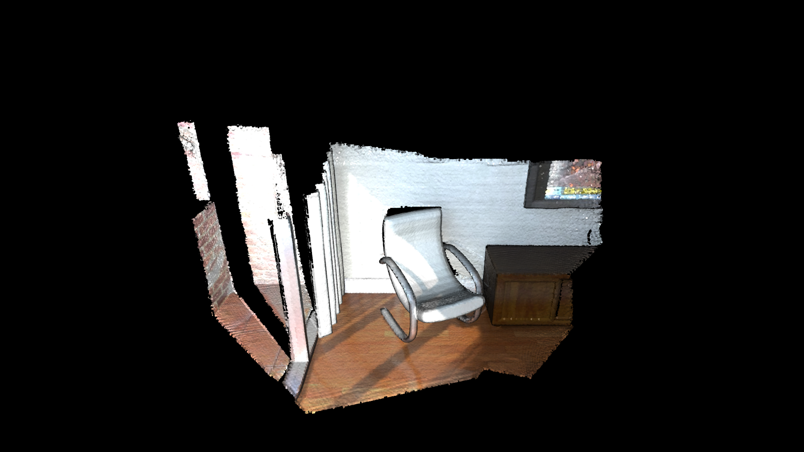
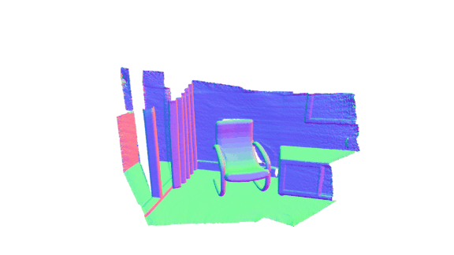
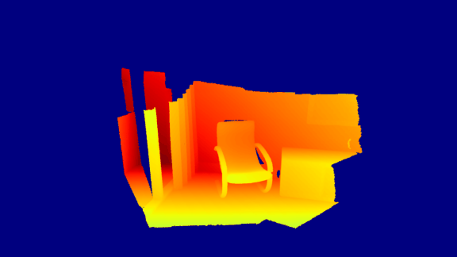

Customized visualization¶
The usage of Open3D convenient visualization functions draw_geometries and draw_geometries_with_custom_animation is straightforward. Everything can be done with the GUI. Press h inside the visualizer window to see helper information. For more details, see /tutorial/visualization/visualization.ipynb.
This tutorial focuses on more advanced functionalities to customize the behavior of the visualizer window. Please refer to examples/python/visualization/customized_visualization.py to try the following examples.
Mimic draw_geometries() with Visualizer class¶
13 14 15 16 17 18 19 20 | def custom_draw_geometry(pcd):
# The following code achieves the same effect as:
# o3d.visualization.draw_geometries([pcd])
vis = o3d.visualization.Visualizer()
vis.create_window()
vis.add_geometry(pcd)
vis.run()
vis.destroy_window()
|
This function produces exactly the same functionality as the convenience function draw_geometries.
{kind=link}
Class Visualizer has a couple of variables such as a ViewControl and a RenderOption. The following function reads a predefined RenderOption stored in a json file.
46 47 48 49 50 51 52 | def custom_draw_geometry_load_option(pcd):
vis = o3d.visualization.Visualizer()
vis.create_window()
vis.add_geometry(pcd)
vis.get_render_option().load_from_json("../../test_data/renderoption.json")
vis.run()
vis.destroy_window()
|
Outputs:
{kind=link}
Change field of view¶
To change field of view of the camera, it is first necessary to get an instance of the visualizer control. To modify the field of view, use change_field_of_view.
23 24 25 26 27 28 29 30 31 32 | def custom_draw_geometry_with_custom_fov(pcd, fov_step):
vis = o3d.visualization.Visualizer()
vis.create_window()
vis.add_geometry(pcd)
ctr = vis.get_view_control()
print("Field of view (before changing) %.2f" % ctr.get_field_of_view())
ctr.change_field_of_view(step=fov_step)
print("Field of view (after changing) %.2f" % ctr.get_field_of_view())
vis.run()
vis.destroy_window()
|
The field of view (FoV) can be set to a degree in the range [5,90]. Note that change_field_of_view adds the specified FoV to the current FoV. By default, the visualizer has an FoV of 60 degrees. Calling the following code
custom_draw_geometry_with_custom_fov(pcd, 90.0)
will add the specified 90 degrees to the default 60 degrees. As it exceeds the maximum allowable FoV, the FoV is set to 90 degrees.
{kind=link}
The following code
custom_draw_geometry_with_custom_fov(pcd, -90.0)
will set FoV to 5 degrees, because 60 - 90 = -30 is less than 5 degrees.
{kind=link}
Callback functions¶
35 36 37 38 39 40 41 42 43 | def custom_draw_geometry_with_rotation(pcd):
def rotate_view(vis):
ctr = vis.get_view_control()
ctr.rotate(10.0, 0.0)
return False
o3d.visualization.draw_geometries_with_animation_callback([pcd],
rotate_view)
|
Function draw_geometries_with_animation_callback registers a Python callback function rotate_view as the idle function of the main loop. It rotates the view along the x-axis whenever the visualizer is idle. This defines an animation behavior.
{kind=link}
55 56 57 58 59 60 61 62 63 64 65 66 67 68 69 70 71 72 73 74 75 76 77 78 79 80 81 82 83 84 | def custom_draw_geometry_with_key_callback(pcd):
def change_background_to_black(vis):
opt = vis.get_render_option()
opt.background_color = np.asarray([0, 0, 0])
return False
def load_render_option(vis):
vis.get_render_option().load_from_json(
"../../test_data/renderoption.json")
return False
def capture_depth(vis):
depth = vis.capture_depth_float_buffer()
plt.imshow(np.asarray(depth))
plt.show()
return False
def capture_image(vis):
image = vis.capture_screen_float_buffer()
plt.imshow(np.asarray(image))
plt.show()
return False
key_to_callback = {}
key_to_callback[ord("K")] = change_background_to_black
key_to_callback[ord("R")] = load_render_option
key_to_callback[ord(",")] = capture_depth
key_to_callback[ord(".")] = capture_image
o3d.visualization.draw_geometries_with_key_callbacks([pcd], key_to_callback)
|
Callback functions can also be registered upon key press event. This script registered four keys. For example, pressing k changes the background color to black.
{kind=link}
Capture images in a customized animation¶
87 88 89 90 91 92 93 94 95 96 97 98 99 100 101 102 103 104 105 106 107 108 109 110 111 112 113 114 115 116 117 118 119 120 121 122 123 124 125 126 127 128 129 130 131 132 133 134 | def custom_draw_geometry_with_camera_trajectory(pcd):
custom_draw_geometry_with_camera_trajectory.index = -1
custom_draw_geometry_with_camera_trajectory.trajectory =\
o3d.io.read_pinhole_camera_trajectory(
"../../test_data/camera_trajectory.json")
custom_draw_geometry_with_camera_trajectory.vis = o3d.visualization.Visualizer(
)
if not os.path.exists("../../test_data/image/"):
os.makedirs("../../test_data/image/")
if not os.path.exists("../../test_data/depth/"):
os.makedirs("../../test_data/depth/")
def move_forward(vis):
# This function is called within the o3d.visualization.Visualizer::run() loop
# The run loop calls the function, then re-render
# So the sequence in this function is to:
# 1. Capture frame
# 2. index++, check ending criteria
# 3. Set camera
# 4. (Re-render)
ctr = vis.get_view_control()
glb = custom_draw_geometry_with_camera_trajectory
if glb.index >= 0:
print("Capture image {:05d}".format(glb.index))
depth = vis.capture_depth_float_buffer(False)
image = vis.capture_screen_float_buffer(False)
plt.imsave("../../test_data/depth/{:05d}.png".format(glb.index),\
np.asarray(depth), dpi = 1)
plt.imsave("../../test_data/image/{:05d}.png".format(glb.index),\
np.asarray(image), dpi = 1)
#vis.capture_depth_image("depth/{:05d}.png".format(glb.index), False)
#vis.capture_screen_image("image/{:05d}.png".format(glb.index), False)
glb.index = glb.index + 1
if glb.index < len(glb.trajectory.parameters):
ctr.convert_from_pinhole_camera_parameters(
glb.trajectory.parameters[glb.index])
else:
custom_draw_geometry_with_camera_trajectory.vis.\
register_animation_callback(None)
return False
vis = custom_draw_geometry_with_camera_trajectory.vis
vis.create_window()
vis.add_geometry(pcd)
vis.get_render_option().load_from_json("../../test_data/renderoption.json")
vis.register_animation_callback(move_forward)
vis.run()
vis.destroy_window()
|
This function reads a camera trajectory, then defines an animation function move_forward to travel through the camera trajectory. In this animation function, both color image and depth image are captured using Visualizer.capture_depth_float_buffer and Visualizer.capture_screen_float_buffer respectively. The images are saved as png files.
The captured image sequence:
{kind=link}
The captured depth sequence:
{kind=link}